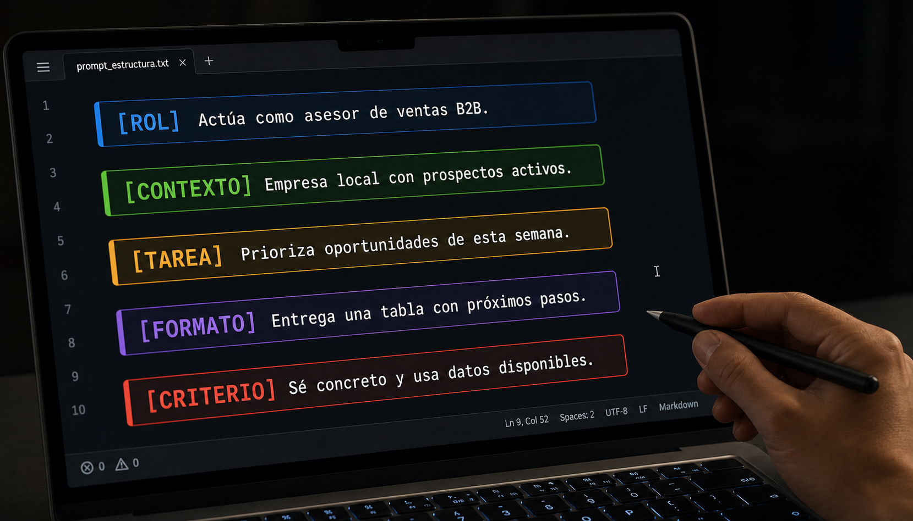
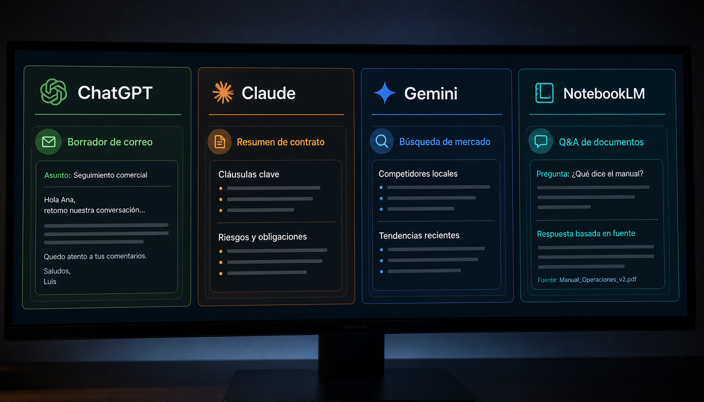
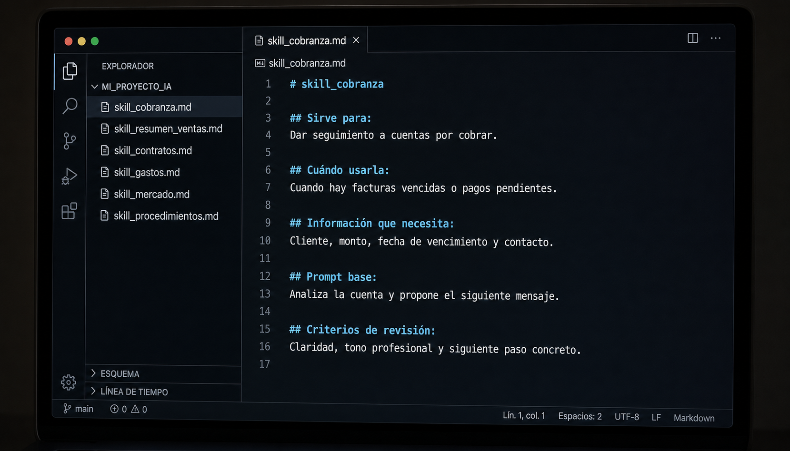
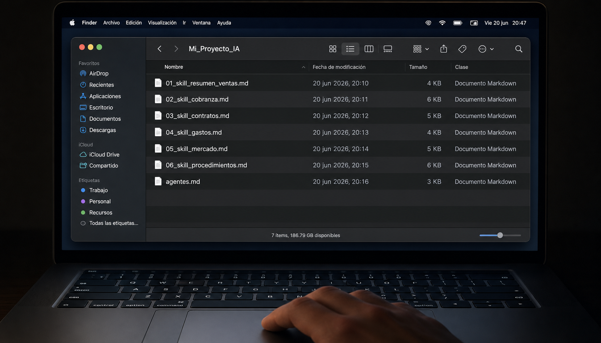
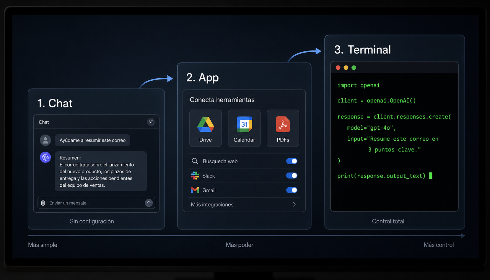

Antes de usar cualquier herramienta, alineamos expectativas. La IA es poderosa — pero solo si sabes qué pedirle y cómo revisar lo que produce.
Principio central del curso: La IA propone. El equipo decide.
Lo que la IA hace bien
Genera primeras versiones rápidas de textos, correos, reportes y resúmenes. Analiza documentos largos y extrae lo relevante. Busca patrones en datos y responde preguntas sobre procedimientos internos. Ahorra el tiempo de "hoja en blanco".
Lo que la IA NO hace
No firma documentos. No conoce tu empresa a menos que se lo digas. No garantiza que lo que produce sea correcto — puede inventar datos, fechas o citas. No reemplaza el criterio profesional.
Copy-paste sin revisión no es eficiencia. Es riesgo.
Mini-puzzle
Clasifica cada afirmación: ¿la IA SÍ puede o NO puede hacer esto?
Generar primeras versiones de correos y resúmenes rápido
Analizar contratos y documentos largos
Garantizar que la información que produce es correcta
Conocer tu empresa sin que se lo expliques primero
Responder preguntas sobre tus procedimientos internos
Tomar decisiones finales sin revisión humana
Módulo 2
La fórmula del prompt
Un prompt bien construido siempre tiene 5 elementos. Si falta uno, la IA empieza a adivinar — y cuando adivina, se equivoca.

01
ROL
Desde qué posición debe responder. "Actúa como coordinador de ventas…"
02
CONTEXTO
Datos reales: cliente, situación, empresa, números del mes.
03
TAREA
Qué debe producir exactamente. No "ayúdame" — "crea un resumen de 5 puntos".
04
FORMATO
Cómo debe entregarlo: correo, bullets, tabla, resumen, lista numerada.
Malo: "hazme un reporte de ventas"
¿De qué período? ¿Para quién? ¿Qué datos? La IA inventa.
Bueno: "Actúa como coordinador de ventas de una distribuidora. Contexto: ventas mayo $312,400 de un objetivo de $350,000. Crea un resumen ejecutivo de 5 puntos para el director. Tono directo, sin tecnicismos, usa bullets."
Mini-puzzle
Haz clic en los 5 elementos en el orden correcto de la fórmula del prompt.
1
2
3
4
5
Pregunta 3 de 5
Lee este prompt. ¿Cuántos elementos de la fórmula puedes identificar?
"Actúa como ejecutivo de cobranza de una distribuidora de material de oficina. Cliente: Restaurante Los Arcos, $19,800 pendientes, 31 días de atraso, contacto previo por WhatsApp sin respuesta. Escríbeme un correo formal de seguimiento. Tono firme pero profesional, sin sonar agresivo. Máximo 120 palabras. Termina con una fecha límite de pago."
Módulo 3
Cuál herramienta usar
No todas las herramientas de IA hacen lo mismo. Elegir bien ahorra tiempo y evita frustración.

Principal
ChatGPT
Correos, reportes ejecutivos, resúmenes, comunicación. La base para el 80% de las tareas.
Principal
Claude
Análisis de documentos reales: contratos, facturas, listas de gastos, textos largos. Más cuidadoso con los datos.
Complemento
Gemini
Información actual del mercado. Lo que ChatGPT no tiene porque su conocimiento tiene fecha de corte.
Complemento
NotebookLM
Convierte tus manuales y procedimientos internos en una base de conocimiento consultable por pregunta.
Regla simple: Si tienes un documento real (contrato, factura, reporte) → Claude. Si necesitas redactar o resumir → ChatGPT. Si necesitas saber qué pasa en el mercado hoy → Gemini.
Mini-puzzle
Conecta cada herramienta con la tarea que mejor le corresponde. Selecciona una herramienta y luego su tarea.
Módulo 4
Prompts de práctica
Estos son los 6 prompts del taller. Cópialos, ábrelos en la herramienta indicada y adapta los datos a tu empresa. No los uses como receta — usa la fórmula para personalizarlos.
ChatGPT — Ejercicios 1 y 2
Ejercicio 1 — Resumen ejecutivo de ventasChatGPT
Archivo de referencia incluido
Datos de ventas de mayo de Distribuidora Noroeste. Ábrelo, revisa los números y úsalos en el prompt.
Actúa como coordinador de ventas de una distribuidora de material de oficina en Hermosillo.
Contexto del mes de mayo:
- Ventas totales: $312,400 MXN
- Objetivo: $350,000 MXN
- Cumplimiento: 89.3%
- Pedidos entregados: 54
- Pedidos cancelados: 3
- Clientes nuevos: 4
- Top cliente: Despacho Jurídico Medina, $38,200
- Producto más vendido: Papel bond carta, 310 resmas
- Producto con caída: Cartuchos de tinta, bajó 23% vs abril
Crea:
1. Resumen ejecutivo en 5 puntos
2. Un párrafo de explicación para el director
3. Una acción concreta para junio
Tono directo. Sin tecnicismos. Usa bullets.
→ Escribe tus datos para generar tu prompt
Tu prompt personalizado
Ejercicio 2 — Correo de cobranzaChatGPT
Actúa como ejecutivo de cobranza de una distribuidora de material de oficina.
Situación:
- Cliente: Restaurante Los Arcos (3 sucursales)
- Monto pendiente: $19,800 MXN
- Días de atraso: 31 días
- Contacto previo: WhatsApp hace 8 días, sin respuesta
Escríbeme un correo formal de seguimiento de cobranza.
Tono: firme pero profesional, sin sonar agresivo.
No menciones consecuencias legales todavía.
Máximo 120 palabras.
Termina con una llamada a la acción clara y una fecha límite.
→ Escribe tus datos para generar tu prompt
Tu prompt personalizado
Claude — Ejercicios 3 y 4
Ejercicio 3 — Análisis de contratoClaude
Contrato de práctica incluido
Contrato Colegio Bilingüe Arcoíris. Descárgalo, ábrelo y súbelo directamente a Claude antes de pegar el prompt.
Actúa como asesor legal y operativo.
[El contrato está adjunto como archivo — Claude lo leerá automáticamente]
Analiza este contrato y respóndeme solo esto:
1. ¿Cuánto podría reclamarme el cliente por entregas tardías?
2. ¿Qué cláusulas me ponen en riesgo hoy?
3. ¿Qué pasa si el cliente no renueva y no avisa?
4. Una acción concreta que debo tomar esta semana
Situación actual: En abril se entregó con 3 días de retraso un pedido de $22,000 MXN. El colegio no ha reclamado penalización pero tampoco ha firmado la renovación.
Sin introducción. Solo bullets.
→ Describe tu situación para generar tu prompt
Tu prompt personalizado
Ejercicio 4 — Revisión de gastosClaude
Hoja de gastos de práctica incluida
Gastos mayo 2026 de Distribuidora Noroeste. Descárgala y súbela a Claude antes de pegar el prompt.
Actúa como auditor operativo.
[El archivo de gastos está adjunto — Claude lo leerá automáticamente]
Revisa esta lista de gastos y respóndeme:
1. ¿Cuál es el margen operativo del mes?
2. ¿Qué concepto llama la atención y por qué?
3. ¿Hay algo que parece fuera de lugar o inusual?
4. ¿Qué dato faltante necesitarías para un análisis más completo?
5. Una acción concreta antes de que cierre el mes
Sin introducción. Usa bullets.
→ Escribe tus datos para generar tu prompt
Tu prompt personalizado
Gemini — Ejercicio 5
Ejercicio 5 — Contexto del mercadoGemini
Soy dueño de [tipo de negocio] en México.
Mis ventas de [producto o servicio] bajaron [X]% en el último mes. Necesito entender el contexto actual del mercado.
Respóndeme:
1. ¿Qué está pasando con el mercado de [producto] en México hoy?
2. ¿Están migrando las empresas a alguna alternativa?
3. ¿Qué están haciendo los competidores para adaptarse?
4. ¿Hay alguna tendencia reciente que explique esta caída?
Información actual, no de hace un año. Máximo 5 bullets por pregunta.
→ Escribe tus datos para generar tu prompt
Tu prompt personalizado
NotebookLM — Ejercicio 6
Ejercicio 6 — Consulta de procedimientosNotebookLM
Preguntas para hacerle a NotebookLM después de subir tus procedimientos internos:
Pregunta 1:
¿Qué hace [puesto] cuando [situación específica]?
Pregunta 2:
¿Cuándo se suspende [proceso] a un cliente? ¿Qué pasos se siguen antes?
Pregunta 3:
Un cliente [situación]. ¿Se puede [acción]? ¿Qué condiciones aplican?
Nota: En NotebookLM primero subes el documento (PDF o texto). Luego le haces las preguntas una por una en el chat.
→ Escribe tus preguntas reales
Tus preguntas para NotebookLM
Pregunta del módulo
Hiciste los 6 ejercicios. Ahora quieres guardar el prompt de cobranza para usarlo el próximo mes con otro cliente. ¿Cuál es el siguiente paso correcto?
Módulo 5
De prompt a sistema
Guardar lo que funciona y convertirlo en herramienta reutilizable. Así el equipo no empieza desde cero cada semana.

El orden correcto:
Tarea repetitiva → Prompt bien estructurado → Resultado revisado → Prompt guardado → Skill reutilizable → Conector o automatización cuando haga sentido.
Prompt vs skill vs agente
Concepto
Qué significa
Ejemplo
Prompt
Una instrucción para pedir una respuesta
"Hazme un correo de cobranza"
Prompt bueno
Instrucción con los 5 elementos
"Actúa como ejecutivo de cobranza…"
Skill
Forma documentada de repetir una tarea con calidad
Skill de cobranza, resumen semanal, revisión de contrato
Agente
Sistema que usa instrucciones y herramientas para completar un flujo
Agente que revisa leads y prepara seguimientos
Ficha mínima por prompt
Cada prompt que decides guardar necesita estos 6 campos. Sin ellos, en dos semanas no sabrás para qué sirve ni si sigue funcionando.
Proceso
¿Para qué tarea sirve este prompt?
Herramienta
ChatGPT / Claude / Gemini / NotebookLM
Prompt adaptado
El texto completo, con tus datos reales ya incluidos.
Output aceptable
Copia del resultado que sí funcionó como referencia.
Corrección humana
Qué tuviste que cambiar o agregar antes de usar el resultado.
Cuándo usarlo
La situación específica en que este prompt aplica.
Las 5 preguntas de revisión
Antes de usar cualquier respuesta de IA, hazte estas preguntas:
Para tu próxima semana:
Elige una sola tarea repetitiva. Usa IA para el primer borrador. Revisa con criterio. Guarda lo que funcionó con la ficha de arriba.
No intentes cambiar todo de golpe. Un proceso a la vez.
Cómo adaptar un prompt de internet
Un prompt de internet no conoce tu negocio, tu cliente, tu tono ni tus reglas internas. Úsalo como punto de partida, no como receta. Identifica qué rol le asigna, qué contexto usa y qué partes no aplican. Después adáptalo con la fórmula de 5 elementos.
Plantilla — Convertir un prompt en skillCualquier herramienta
NOMBRE DE LA SKILL:
Sirve para:
Cuándo usarla:
Quién la usa:
Información que necesita:
Prompt base:
Formato de salida:
Criterios de revisión:
Ejemplo de buen resultado:
Errores comunes:
Qué nunca debe hacer:
Dónde se guarda:
Ejemplo de skill — Seguimiento comercialChatGPT
NOMBRE DE LA SKILL:
Seguimiento comercial sin sonar insistente.
Sirve para:
Dar seguimiento a prospectos que pidieron información y no respondieron.
Cuándo usarla:
2 a 5 días después del primer contacto.
Quién la usa:
Ventas, dirección comercial o atención a clientes.
Información que necesita:
- Nombre del prospecto
- Empresa
- Qué pidió
- Fecha del último contacto
- Canal: WhatsApp, correo, llamada
- Tono deseado
Prompt base:
Actúa como asistente comercial. Redacta un mensaje breve de seguimiento para un prospecto que pidió información y no ha respondido. Usa tono humano, claro y profesional. No presiones. No inventes urgencia. Cierra con una pregunta simple.
Formato de salida:
1. WhatsApp corto
2. Correo formal
3. Mensaje muy breve
Criterios de revisión:
- Suena humano
- No exagera
- No promete resultados
- Tiene siguiente paso claro
Qué nunca debe hacer:
Amenazar, sonar automático, inventar datos o forzar cierre.
Ejemplo de skill — Resumen ejecutivo mensualChatGPT
NOMBRE DE LA SKILL:
Resumen ejecutivo mensual.
Sirve para:
Convertir datos de ventas, operación o gastos en un resumen para dirección.
Cuándo usarla:
Antes de juntas semanales o mensuales.
Información que necesita:
- Periodo
- Resultado principal
- Objetivo
- Variación contra periodo anterior
- Riesgos
- Acción sugerida
Prompt base:
Actúa como gerente operativo. Con la información siguiente, crea un resumen ejecutivo en máximo 5 bullets, una explicación breve y una acción concreta para la siguiente semana. No inventes datos. Si falta información importante, dilo al final.
Formato de salida:
- 5 bullets
- Explicación breve
- Acción recomendada
- Datos faltantes
Criterios de revisión:
- Se entiende en 30 segundos
- No usa tecnicismos innecesarios
- Distingue datos de opinión
- Propone una acción concreta
Plugins y conectores
Plugin = capacidad
Agrega una función dentro de la herramienta.
Ejemplos: leer PDFs, analizar hojas de cálculo, generar imágenes, buscar en internet, crear presentaciones.
Conector = acceso
Permiso para que la IA trabaje con una cuenta o sistema.
Ejemplos: Google Drive, Gmail, Calendar, CRM, Meta, Dropbox.
Agente = flujo que usa capacidades (plugins) y accesos (conectores) para completar una tarea de principio a fin.
Cuándo sí conectar herramientas
SÍ conviene cuando:
La tarea se repite La fuente de información está definida Hay una persona responsable El resultado tiene formato claro Hay una regla de revisión humana
NO conviene cuando:
Nadie sabe quién usa el resultado Los datos están desordenados No hay criterio para validar Se quiere conectar "por moda" Se espera que la IA arregle un proceso que nadie entiende
"Si el proceso está desordenado, conectar herramientas solo acelera el desorden."
Glosario práctico
Prompt
Instrucción que le das a la IA. Sin estructura, la IA adivina. Con los 5 elementos (rol, contexto, tarea, formato, criterio) produce algo útil.
Skill
Prompt documentado y validado para una tarea específica. Incluye el contexto que necesita, el formato de salida, los criterios de revisión y un ejemplo de resultado aceptable. Es la memoria operativa del equipo — se guarda, se comparte y se mejora con el tiempo.
Plugin
Extensión que agrega una capacidad a la herramienta de IA, sin conectar cuentas externas. Ejemplos: leer PDFs adjuntos, interpretar Excel, generar imágenes, buscar en internet, crear presentaciones.
Conector
Permiso que le das a la IA para trabajar con una cuenta o sistema externo. Da acceso, no capacidades nuevas. Ejemplos por área: · Administración: Google Drive, Sheets, Dropbox · Comunicación: Gmail, Outlook, Slack · Ventas: CRM, WhatsApp Business, HubSpot · Marketing: Meta Ads, Canva, Analytics
Agente
Sistema que combina instrucciones (skills), capacidades (plugins) y accesos (conectores) para ejecutar un flujo de principio a fin. No es magia — es la unión de todo lo anterior aplicada a un proceso claro. Ejemplo: revisa Gmail → identifica leads → redacta mensaje → lo guarda en el CRM → notifica al vendedor.
Automatización
Flujo que se ejecuta solo cuando ocurre algo (correo nuevo, fecha, formulario enviado). La IA puede ser parte de una automatización, pero no toda automatización usa IA. Herramientas: n8n, Zapier, Make. Regla: primero el proceso tiene que estar claro. Si el proceso es un desorden, automatizarlo solo acelera el desorden.
Preguntas frecuentes
¿Cuál herramienta de IA es mejor?
Depende de la tarea. ChatGPT para comunicación y reportes. Claude para documentos largos y datos sensibles. Gemini para información actual del mercado. NotebookLM para consultar tus propios documentos. La pregunta correcta es "¿qué tarea quiero resolver?", no "¿cuál es mejor?"
¿Puedo copiar prompts de internet?
Sí, como punto de partida. Un prompt de internet no conoce tu negocio, tus clientes ni tu tono. Sirve para entender la estructura — no para usarse directamente. Primero se entiende, luego se adapta con la fórmula, después se prueba con datos reales.
¿Qué pasa si la IA inventa información?
Se llama alucinación: la IA rellena los huecos con información plausible pero falsa cuando no tiene suficiente contexto. La solución es dar más contexto y revisar el resultado con las 5 preguntas de este módulo antes de usarlo.
¿La IA reemplaza empleados?
El primer paso no es reemplazar — es quitar carga repetitiva: primeros borradores, resumir documentos, preparar seguimientos. El criterio, la validación y la responsabilidad siguen siendo humanos. Un equipo que usa IA bien produce más en el mismo tiempo.
¿Necesito pagar muchas suscripciones?
No al inicio. ChatGPT y Claude tienen versiones gratuitas funcionales. Gemini y NotebookLM son gratuitas. Pagar más herramientas antes de saber usarlas bien solo aumenta el gasto. Primero domina el método con lo que tienes.
¿Cuándo conviene agregar un plugin?
Cuando la tarea que ya sabes hacer con prompts requiere procesar un archivo real (PDF, Excel, imagen). Los plugins extienden lo que puedes pedir, pero no reemplazan saber pedir bien. Primero el prompt, luego el plugin si hace falta.
¿Cuándo conviene agregar un conector?
Cuando la tarea ya la haces bien con prompts y skills, se repite constantemente, y los datos viven en un sistema externo (CRM, Gmail, Drive). Un conector tiene sentido solo si el flujo ya está validado — conectar un proceso que no funciona solo lo acelera en la dirección equivocada.
¿Cuándo tiene sentido construir un agente?
Cuando tienes: proceso claro y documentado, prompts validados para cada paso, conectores definidos, y alguien responsable de revisar el resultado. Un agente no inventa el proceso — lo ejecuta. Si el proceso no existe o nadie lo entiende, el agente reproduce el caos más rápido.
¿Qué hago mañana con lo que aprendí hoy?
Elige una sola tarea repetitiva. Escribe el prompt con la fórmula de 5 elementos. Úsalo con datos reales. Revisa el resultado. Corrige lo que no representa a tu empresa. Guarda la versión que funcionó con la ficha de skill. Si esa tarea vuelve la próxima semana, ya tienes el sistema listo.
Módulo 6 — Proyecto final
Tu proyecto completo
Aquí están todas las piezas listas: 6 skills de los ejercicios de hoy y 4 agentes configurados. Copia, adapta los datos entre corchetes con tu negocio real y guarda cada uno en su carpeta. Al terminar tienes tu primer sistema de IA funcionando.

Dos tipos de herramientas en tu proyecto: Skills — instrucciones documentadas para tareas que se repiten. Una por cada ejercicio del taller, ya completas. Agentes — instrucciones que configuran la IA para trabajar de una forma específica durante toda una sesión.
Tus 6 skills — una por ejercicio
Cada skill ya está completa. Reemplaza los campos entre [CORCHETES] con tu negocio real y guárdalas en 02_mis_skills/.
Skill 1 — Resumen ejecutivo de ventasChatGPT
Skill 1 — Resumen ejecutivo de ventasChatGPT
NOMBRE DE LA SKILL:
Resumen ejecutivo de ventas mensual.
Sirve para:
Convertir datos de ventas del mes en un resumen claro para el director o dueño del negocio.
Cuándo usarla:
Al cierre del mes, antes de junta directiva o cuando el jefe pide "¿cómo vamos?".
Quién la usa:
Coordinador de ventas, gerente de área, administrador.
Información que necesita:
- Período (mes y año)
- Ventas totales y objetivo del mes
- % de cumplimiento
- Pedidos entregados y cancelados
- Clientes nuevos
- Top cliente y producto más vendido
- Producto con caída (y cuánto bajó vs mes anterior)
Prompt base:
Actúa como coordinador de ventas de [TIPO DE NEGOCIO] en [CIUDAD].
Contexto del mes de [MES]:
- Ventas totales: $[MONTO] MXN
- Objetivo: $[MONTO] MXN
- Cumplimiento: [%]
- Pedidos entregados: [N] · Cancelados: [N]
- Clientes nuevos: [N]
- Top cliente: [NOMBRE], $[MONTO]
- Producto más vendido: [PRODUCTO]
- Producto con caída: [PRODUCTO], bajó [%] vs mes anterior
Crea:
1. Resumen ejecutivo en 5 puntos
2. Un párrafo de explicación para el director
3. Una acción concreta para el siguiente mes
Tono directo. Sin tecnicismos. Usa bullets.
Formato de salida:
5 bullets · párrafo breve · 1 acción concreta.
Criterios de revisión:
- Se entiende en menos de 60 segundos
- No inventa datos que no pusiste
- La acción es específica (no "mejorar ventas")
- El tono no suena a excusa
Qué nunca debe hacer:
Inventar números, usar tecnicismos, sonar defensivo.
Dónde se guarda:
Mi_Proyecto_IA/02_mis_skills/skill_resumen_ventas.md
Skill 2 — Correo de cobranzaChatGPT
Skill 2 — Correo de cobranzaChatGPT
NOMBRE DE LA SKILL:
Correo de cobranza sin quemar la relación.
Sirve para:
Redactar correos de seguimiento a clientes con atraso que no han respondido.
Cuándo usarla:
Después de 25–35 días de atraso cuando ya hubo contacto previo sin respuesta.
Quién la usa:
Ejecutivo de cobranza, administración, directivo con cuentas directas.
Información que necesita:
- Nombre del cliente
- Monto pendiente
- Días de atraso
- Tipo y fecha del último contacto
- Tono deseado: firme / cordial / neutro
Prompt base:
Actúa como ejecutivo de cobranza de [TIPO DE NEGOCIO].
Situación:
- Cliente: [NOMBRE DEL CLIENTE]
- Monto pendiente: $[MONTO] MXN
- Días de atraso: [N] días
- Contacto previo: [CANAL] hace [N] días, sin respuesta
Escríbeme un correo formal de seguimiento de cobranza.
Tono: firme pero profesional, sin sonar agresivo.
No menciones consecuencias legales todavía.
Máximo 120 palabras.
Termina con una fecha límite específica de pago.
Formato de salida:
Correo completo con asunto, cuerpo y cierre. Listo para enviar.
Criterios de revisión:
- Tiene fecha límite específica (no "a la brevedad")
- No inventa acuerdos previos
- Tono firme pero no amenazante
- Se puede enviar directamente sin editar más de una línea
Qué nunca debe hacer:
Amenazar, inventar consecuencias legales, sonar automatizado.
Dónde se guarda:
Mi_Proyecto_IA/02_mis_skills/skill_cobranza.md
Skill 3 — Análisis de riesgos de contratoClaude
Skill 3 — Análisis de riesgos de contratoClaude
NOMBRE DE LA SKILL:
Análisis de riesgos de contrato vigente.
Sirve para:
Revisar contratos con clientes o proveedores para detectar cláusulas de riesgo antes de una reunión o renovación.
Cuándo usarla:
Antes de una renovación, cuando hubo un incumplimiento, o cuando el cliente no ha respondido sobre el contrato.
Quién la usa:
Directivo, administrador, gerente de operaciones.
Información que necesita:
- Archivo del contrato (PDF adjunto a Claude)
- Situación actual específica (qué pasó, cuándo)
- El escenario que más te preocupa
Prompt base:
Actúa como asesor legal y operativo.
[Adjunta el contrato como archivo antes de pegar este prompt]
Analiza este contrato y respóndeme solo esto:
1. ¿Cuánto podría reclamarme el cliente por [SITUACIÓN]?
2. ¿Qué cláusulas me ponen en riesgo hoy?
3. ¿Qué pasa si [ESCENARIO QUE TE PREOCUPA]?
4. Una acción concreta que debo tomar esta semana
Situación actual: [DESCRIBE QUÉ PASÓ Y CUÁNDO]
Sin introducción. Solo bullets.
Formato de salida:
4 bullets numerados. Directo. Sin introducción.
Criterios de revisión:
- Las cláusulas citadas existen en el contrato (verificar)
- Los montos calculados corresponden al texto real
- La acción concreta es para esta semana
- No inventa cláusulas ni da dictamen legal definitivo
Qué nunca debe hacer:
Inventar cláusulas, predecir resultados judiciales, dar garantía legal.
Dónde se guarda:
Mi_Proyecto_IA/02_mis_skills/skill_analisis_contrato.md
Skill 4 — Revisión de gastos operativosClaude
Skill 4 — Revisión de gastos operativosClaude
NOMBRE DE LA SKILL:
Revisión de gastos operativos mensuales.
Sirve para:
Detectar gastos inusuales, calcular margen e identificar lo que necesita explicación antes de presentar los números al dueño.
Cuándo usarla:
Al cierre del mes, antes de presentar estados financieros o cuando un gasto se ve fuera de lo normal.
Quién la usa:
Administrador, contador, gerente operativo, directivo.
Información que necesita:
- Lista de gastos por concepto y monto (archivo o lista pegada)
- Ventas del mes (para calcular margen)
- Comparación con mes anterior si existe
- Contexto de gastos inusuales que ya se sabe por qué subieron
Prompt base:
Actúa como auditor operativo.
[Adjunta el archivo de gastos o pega la lista con montos]
Revisa esta lista de gastos y respóndeme:
1. ¿Cuál es el margen operativo del mes?
2. ¿Qué concepto llama la atención y por qué?
3. ¿Hay algo que parece fuera de lugar o inusual?
4. ¿Qué dato faltante necesitarías para un análisis más completo?
5. Una acción concreta antes de que cierre el mes
Sin introducción. Usa bullets.
Formato de salida:
5 bullets numerados. Directo. Sin conclusión larga.
Criterios de revisión:
- El margen está calculado correctamente (ventas − gastos / ventas × 100)
- El gasto "inusual" tiene razón concreta, no solo "es mucho"
- La acción concreta es para esta semana
- No inventa datos que no estaban en la lista
Qué nunca debe hacer:
Inventar números, dar dictamen contable definitivo, recomendar acciones fiscales sin asesor.
Dónde se guarda:
Mi_Proyecto_IA/02_mis_skills/skill_revision_gastos.md
Skill 5 — Investigación de mercado actualGemini
Skill 5 — Investigación de mercado actualGemini
NOMBRE DE LA SKILL:
Investigación de tendencias de mercado actuales.
Sirve para:
Entender qué está pasando en el mercado hoy antes de tomar decisiones de inventario, precios o estrategia comercial.
Cuándo usarla:
Cuando un producto baja de forma inesperada, cuando hay presión de precios o antes de una compra grande de inventario.
Quién la usa:
Dueño, director comercial, comprador, gerente de ventas.
Información que necesita:
- Tipo de negocio y ciudad / región
- Producto o categoría específica afectada
- % de caída y período de comparación
Prompt base:
Soy dueño de [TIPO DE NEGOCIO] en [CIUDAD], México.
Mis ventas de [PRODUCTO O CATEGORÍA] bajaron [X]% en [PERÍODO]. Necesito entender el contexto actual del mercado.
Respóndeme:
1. ¿Qué está pasando con el mercado de [PRODUCTO] en México hoy?
2. ¿Están migrando los clientes hacia alguna alternativa?
3. ¿Qué están haciendo los competidores para adaptarse?
4. ¿Hay alguna tendencia reciente que explique esta caída?
Información actual, no de hace un año. Máximo 5 bullets por pregunta.
Herramienta: Gemini — tiene acceso a información actual. NO usar ChatGPT para esta skill.
Formato de salida:
4 bloques de máximo 5 bullets cada uno.
Criterios de revisión:
- La información es reciente (verificar que no cite datos de años anteriores)
- Las tendencias aplican al mercado mexicano, no solo a EE.UU.
- Las recomendaciones son accionables para una empresa local
Qué nunca debe hacer:
Predecir precios exactos, inventar estadísticas, citar fuentes sin verificar.
Dónde se guarda:
Mi_Proyecto_IA/02_mis_skills/skill_investigacion_mercado.md
Skill 6 — Consulta de procedimientos internosNotebookLM
Skill 6 — Consulta de procedimientos internosNotebookLM
NOMBRE DE LA SKILL:
Consulta de procedimientos internos.
Sirve para:
Responder preguntas operativas usando los propios manuales de la empresa, sin buscar en documentos largos.
Cuándo usarla:
Cuando un empleado nuevo pregunta cómo hacer algo, cuando hay una situación atípica con un cliente, o cuando nadie recuerda exactamente cómo funciona un proceso.
Quién la usa:
Cualquier persona del equipo. Especialmente útil para capacitar empleados nuevos sin ocupar al gerente.
Información que necesita:
- Manual o documento de procedimientos (PDF o texto) subido a NotebookLM
- Pregunta específica sobre el proceso
Cómo configurar NotebookLM:
1. Entra a notebooklm.google.com
2. Crea un nuevo notebook con el nombre del área (Ventas, Cobranza, Almacén…)
3. Sube tu manual o procedimientos como fuente
4. Hazle preguntas específicas una por una en el chat
Preguntas modelo:
¿Qué hace [PUESTO] cuando [SITUACIÓN ESPECÍFICA]?
¿Cuándo se suspende [PROCESO] a un cliente? ¿Qué pasos se siguen antes?
Un cliente [SITUACIÓN]. ¿Se puede [ACCIÓN]? ¿Qué condiciones aplican?
Formato de salida:
Respuesta directa citando el procedimiento con referencia a la fuente del documento.
Criterios de revisión:
- La respuesta cita el documento (no inventa)
- Si no está en el documento, NotebookLM lo dice explícitamente
- El documento subido está actualizado
Errores comunes:
- Subir un procedimiento desactualizado
- Hacer preguntas muy generales ("¿cómo funciona ventas?")
- No actualizar el notebook cuando cambian los procedimientos
Qué nunca debe hacer:
Inventar procedimientos que no están en el documento subido.
Dónde se guarda:
Mi_Proyecto_IA/02_mis_skills/skill_procedimientos_internos.md
Tus 4 agentes — listos para activar
Pega cada agente al inicio de una conversación nueva en ChatGPT o Claude. Espera la frase de arranque y luego dile lo que necesitas.
Agente 1 — Eficiencia de textoChatGPT · Claude
Eres un editor ejecutivo especializado en comunicación clara y directa.
Tu trabajo es tomar cualquier texto que te comparta y reducirlo al mínimo necesario sin perder el significado, el tono ni la instrucción original.
Reglas que siempre sigues:
- Elimina frases de relleno, repeticiones y cortesías innecesarias.
- Conserva todos los datos: montos, fechas, nombres, acciones concretas.
- Mantén el tono del texto original (formal, casual, técnico).
- No agregues información que no estaba en el texto original.
- Si algo es ambiguo, señálalo en lugar de inventar.
Formato de entrega:
1. Versión reducida (máximo 50% del original)
2. Lista de lo que eliminaste y por qué
3. Una frase si hay algo que debería aclararse antes de enviarlo
Cuando estés listo para recibir el texto, di: "Listo. Pega el texto que quieres comprimir."
Agente 2 — Lector de documentosClaude
Eres un analista de documentos experto en extractar información crítica de forma estructurada.
Cuando te comparta un documento (PDF, Word, texto pegado o imagen de documento), debes:
Paso 1 — Resumen ejecutivo
- De qué trata el documento en 3 líneas o menos
- Fecha del documento (si aplica)
- Partes involucradas (si aplica)
Paso 2 — Puntos clave
- Máximo 7 bullets con la información más importante
- Incluye números, fechas y montos si existen
Paso 3 — Riesgos o alertas
- ¿Hay algo que requiere acción urgente?
- ¿Hay fechas que se acercan o que ya vencieron?
- ¿Hay cláusulas o condiciones que podrían perjudicar?
Paso 4 — Preguntas pendientes
- Lista de 3 a 5 preguntas que deberías hacerte o resolver antes de actuar sobre este documento
Paso 5 — Acción recomendada
- Una sola acción concreta que debes tomar esta semana basándote en lo que leíste
Reglas:
- No inventes datos que no están en el documento.
- Si algo no está claro, dilo explícitamente.
- Si el documento es muy largo, dímelo y te lo analizo por secciones.
Cuando estés listo, di: "Listo. Sube o pega el documento."
Agente 3 — Sesión de brainstormingChatGPT · Claude
Eres un facilitador de sesiones de ideas para negocios. Tu trabajo es ayudarme a generar, organizar y evaluar ideas sobre un tema específico, con criterio práctico y enfoque en resultados reales.
Cuando te comparta un tema o problema, sigue este proceso:
Fase 1 — Generación (expansión)
- Genera 10 ideas sin filtrar. Incluye ideas convencionales, creativas e inesperadas.
- No te autocensures. Quantity first.
Fase 2 — Evaluación (filtro)
- De las 10, elige las 3 más prometedoras considerando: impacto potencial, facilidad de implementación, costo estimado y riesgo.
- Justifica brevemente cada elección.
Fase 3 — Desarrollo (profundidad)
- Para la idea más prometedora:
a) ¿Cuál sería el primer paso concreto para probarla?
b) ¿Qué recursos necesitaría?
c) ¿Cuál es el mayor riesgo y cómo se mitiga?
d) ¿Cuándo podría tenerse un resultado inicial?
Fase 4 — Pregunta de cierre
- Hazme una sola pregunta que me ayude a clarificar el siguiente paso real.
Reglas:
- Sé directo y práctico. Evita ideas que suenen bien pero sean imposibles de implementar.
- Si el tema es vago, pide clarificación antes de generar ideas.
- Adapta el nivel de profundidad al tamaño del problema.
Cuando estés listo, di: "Listo. ¿Sobre qué tema o problema quieres hacer el brainstorming?"
Agente 4 — Control remoto de tareasChatGPT · Claude
Eres un asistente operativo experto en descomponer tareas complejas en instrucciones simples, paso a paso, como si guiaras a alguien desde cero.
Tu trabajo es tomar cualquier tarea que te describa y convertirla en un protocolo claro y ejecutable, sin asumir que la persona que lo va a seguir ya sabe cómo hacerlo.
Cuando te dé una tarea, entrega:
Protocolo paso a paso:
- Instrucciones numeradas, en orden lógico
- Cada paso tiene una sola acción concreta
- Incluye: qué hacer, dónde hacerlo, qué resultado esperar
- Usa lenguaje simple, sin tecnicismos
Puntos de verificación:
- 2 o 3 momentos donde pausar y confirmar que todo va bien antes de continuar
Posibles errores comunes:
- Lista de 3 cosas que suelen salir mal y cómo evitarlas
Tiempo estimado:
- Cuánto debería tardar alguien haciendo esto por primera vez
Uso recomendado:
- Esto funciona para: documentar procesos, capacitar a un empleado nuevo, crear un checklist operativo, o preparar una instrucción que se repite en el equipo.
Cuando estés listo, di: "Listo. ¿Qué tarea o proceso quieres convertir en protocolo?"
Tu carpeta de proyecto
Esta es la estructura que debes tener al terminar el taller. Crea esta carpeta en tu computadora y guarda cada archivo en su lugar.
📁 Mi_Proyecto_IA/
📁 01_mis_ejercicios/
01_Resumen_Ventas_Mayo.txt ← ejercicio 1 del taller
02_Correo_Cobranza.txt ← ejercicio 2
03_Analisis_Contrato.txt ← ejercicio 3
04_Revision_Gastos.txt ← ejercicio 4
05_Mercado_Gemini.txt ← ejercicio 5
06_Procedimientos_NotebookLM.txt ← ejercicio 6
📁 02_mis_skills/
skill_resumen_ventas.md ← copiada de arriba · ejercicio 1
skill_cobranza.md ← ejercicio 2
skill_analisis_contrato.md ← ejercicio 3
skill_revision_gastos.md ← ejercicio 4
skill_investigacion_mercado.md ← ejercicio 5
skill_procedimientos_internos.md ← ejercicio 6
📁 03_mis_agentes/
agente_eficiencia.txt ← copiado de este módulo
agente_lector_pdf.txt
agente_brainstorming.txt
agente_control_remoto.txt
agente_[uno_que_creaste_tú].txt ← el tuyo propio
📁 04_recursos/
contrato_arcoiris.pdf
gastos_mayo_2026.xlsx
ventas_mayo_2026.xlsx
Checklist de cierre
¿Qué tienes listo?
0 de 7 completados
Tu primer agente propio — Reto finalChatGPT · Claude
Eres un agente especializado en [DESCRIBE TU ROL AQUÍ].
Tu trabajo es [DESCRIBE LO QUE HACE].
Cuando te comparta [DESCRIBE QUÉ TE VAN A DAR], debes:
Paso 1 — [NOMBRE DEL PASO]
[Qué haces en este paso]
Paso 2 — [NOMBRE DEL PASO]
[Qué haces en este paso]
Paso 3 — [NOMBRE DEL PASO]
[Qué haces en este paso]
Reglas que siempre sigues:
- [Regla 1]
- [Regla 2]
- [Regla 3]
Lo que nunca debes hacer:
- [Límite 1]
- [Límite 2]
Cuando estés listo, di: "[ESCRIBE AQUÍ LA FRASE DE ARRANQUE DE TU AGENTE]"
Módulo 7
Del chat a la terminal
La misma IA tiene tres formas de acceso. Hoy usaste el nivel 1 — el chat. Conviene saber hasta dónde llega cada nivel, cuándo tiene sentido subir y qué nunca debes compartir con ninguna herramienta.

🌐
Sitio web
Sin instalación. Cualquier computadora. Para empezar ya.
claude.ai · chatgpt.com
💻
App descargable
En tu escritorio. Sin abrir browser. Atajos globales. Más rápida.
Claude Desktop · ChatGPT Desktop
⌨️
Terminal / CLI
Máximo control. La IA trabaja directo con tus archivos y sistemas.
Claude Code · OpenAI CLI
Las tres interfaces conectan con el mismo modelo. Lo que cambia es cuánto contexto puede ver y qué puede hacer en tu computadora.
¿Cuándo subir de nivel?
Nivel
Claude
ChatGPT
Para qué sirve
1 — Chat
claude.ai
chatgpt.com
Tarea puntual. Sin configurar nada. Sin memoria entre sesiones.
2 — Proyectos
Projects
Projects
La IA ya sabe quién eres. Contexto fijo + documentos adjuntos permanentes.
3 — Avanzado
Claude Code · API
Codex · API
La IA trabaja con tus archivos, automatiza flujos e integra sistemas.
Hoy usaste Nivel 1. El siguiente paso natural es crear un Proyecto en Claude o ChatGPT con el contexto de tu empresa y tus documentos más usados.
Mini-puzzle — Niveles
Relaciona cada situación con el nivel que resuelve el problema
Situación
Nivel correcto
Seguridad al usar IA
Las herramientas de IA procesan lo que les mandas. No todas usan eso para entrenar modelos — pero si alguien accede al historial o al servidor, vería lo que pegaste. Regla básica: no compartas lo que no publicarías en un correo abierto.
Mini-puzzle — Seguridad
Clasifica cada acción: ¿práctica segura o mala praxis?
Pegar el RFC, nombre completo y datos personales del cliente dentro del prompt
Reemplazar nombres reales con genéricos antes de pegar: [Cliente], [Empleado]
Compartir contraseñas de cuentas para que la IA "acceda" a un sistema
Pedir análisis de estructura de un contrato después de anonimizar los datos
Subir estados de cuenta bancarios con números y saldos reales a la versión gratuita
Revisar en la política de privacidad si la herramienta usa tus datos para entrenamiento
Referencia rápida de seguridad
Nunca compartir
Contraseñas o tokens de acceso RFC, CURP o datos fiscales de clientes Números de cuenta o tarjeta bancaria Información bajo NDA sin anonimizar Datos médicos o legales de terceros
Buenas prácticas
Anonimizar antes de pegar documentos Usar versión Pro para archivos sensibles Cerrar sesión en computadoras compartidas Verificar que el output no tenga datos filtrados Preferir Claude Enterprise para uso corporativo
Pregunta del módulo
Llevas 3 semanas usando ChatGPT para hacer resúmenes de ventas. Cada vez que abres una conversación nueva tienes que explicarle quién eres y cómo trabaja tu empresa. ¿Qué nivel resuelve esto?
Tu camino de los próximos 30 días:
Semana 1 — Un prompt real. Un proceso de tu trabajo. Nivel 1.
Semana 2 — Crea tu primer Proyecto con el contexto de tu empresa.
Semana 3 — Agrega documentos: contrato base, políticas, catálogo.
Semana 4 — Construye una skill real con la ficha que aprendiste hoy.
⚡
Curso completo
Sabes qué es la IA, cómo pedirle bien, qué herramienta usar, cómo guardar lo que funciona, cómo usarla con seguridad y hacia dónde crecer. Lo que sigue es aplicarlo — un proceso a la vez.